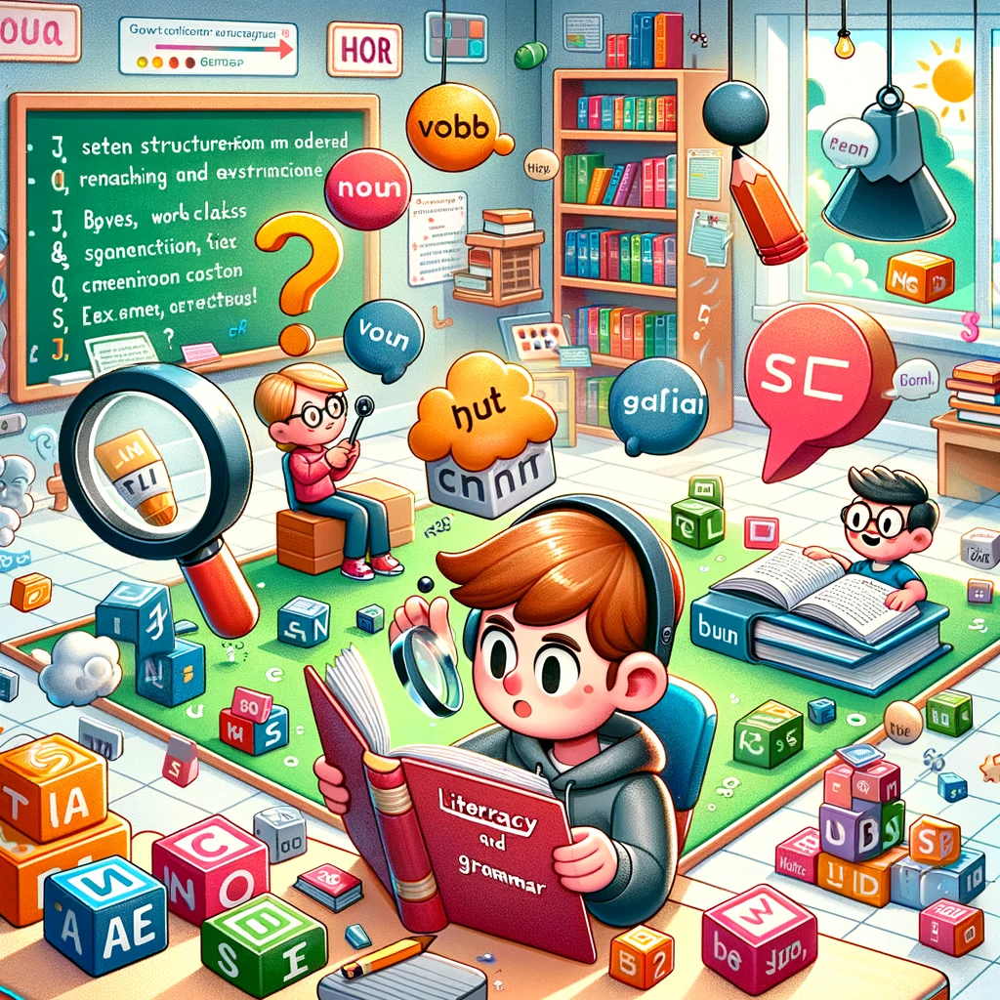

In Unit 1, participants engage in a comprehensive exploration of literacy and language skills. The first segment focuses on literacy, prompting self-reflection on current reading habits and recognizing literacy as a foundational ability. Learners delve into the varied applications of reading across different media, incorporating visual and contextual cues to refine their reading capabilities. The unit also guides students through the critical writing process, emphasizing the five stages and offering practical tips for productivity, while encouraging reflection on common challenges faced during writing tasks.
Shifting the focus to language structure and grammar, the second segment delves into the essentials of constructing grammatically correct sentences. Participants explore the eight parts of speech, gain insights into verb tenses, and understand the crucial concept of subject-verb agreement. The unit introduces transition words and phrases, highlighting their role in creating cohesive and well-structured writing. The practical application at the conclusion empowers participants to seamlessly integrate these newfound skills into their writing, ensuring effective communication and expression.
Unit 1, as a whole, lays a solid groundwork for participants, equipping them with a nuanced understanding of literacy, refined reading habits, critical writing skills, and the intricacies of grammar. The unit’s holistic approach enables learners to navigate various aspects of language use with confidence, fostering effective communication in both written and verbal forms.